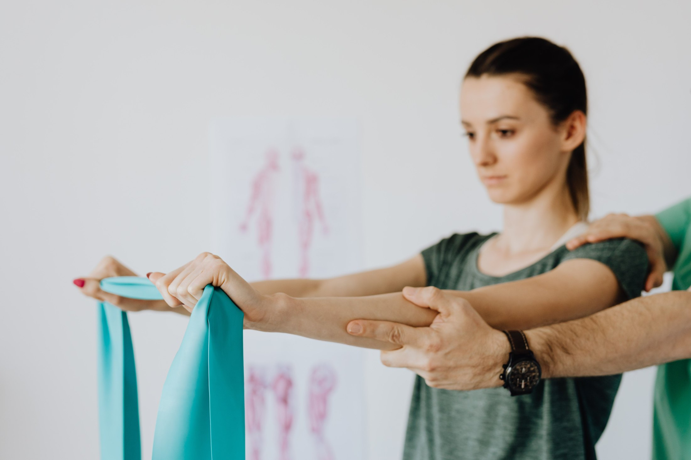
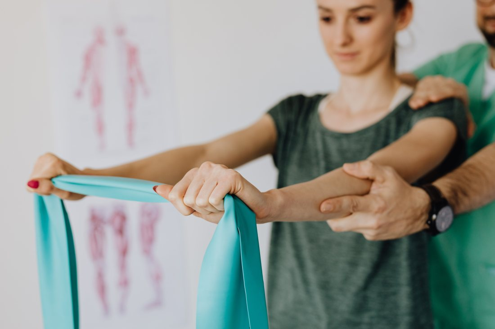
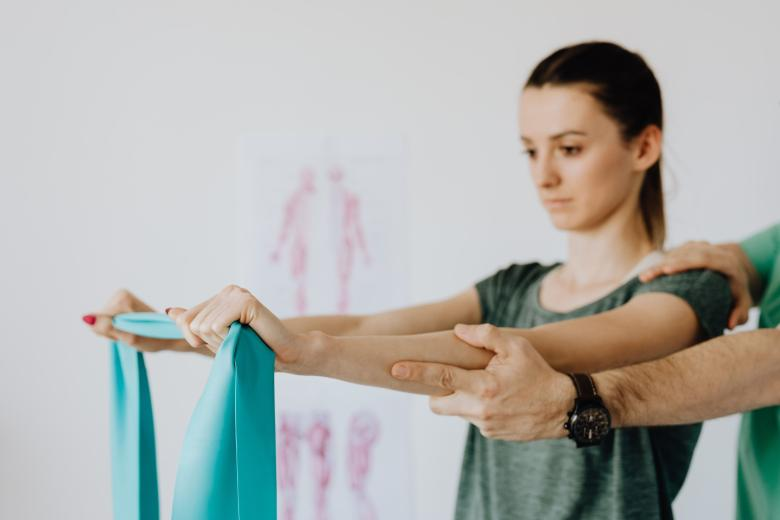
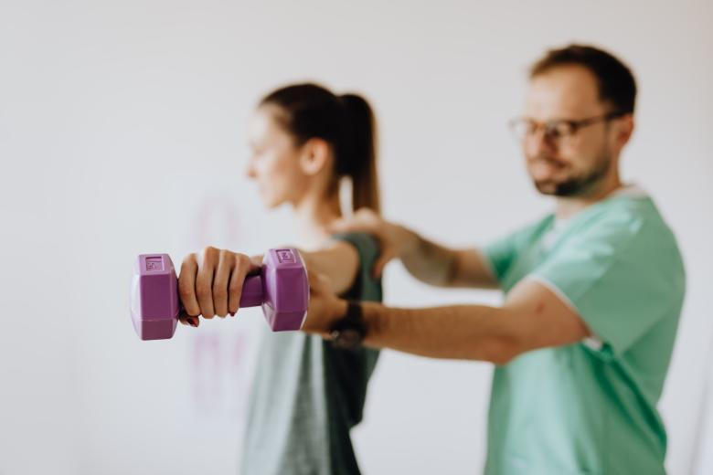

No hay que contar la historia de nuevo
El que atiende la sesión ocho vio la sesión uno. Sabe qué dolía al principio, qué se probó y qué no funcionó, y no hay que explicárselo otra vez desde el accidente.
Propuesta de sitio web — preparada para Felipe Garrido Carreño por CristalWeb
5,0 con 63 reseñas siendo una sola persona: el kine al que se llega por el dato de un conocido. Esta página es ese dato, puesto por escrito — y contesta la pregunta que la familia hace en voz baja: si puede ir a la casa.
Kinesiología · Villarrica
Es la pregunta que hace una familia cuando el operado no puede bajar la escalera, cuando el abuelo ya no sale, o cuando cargar a alguien hasta el auto es la parte más difícil del día. Se contesta una vez, por escrito, y deja de ser una conversación incómoda por teléfono.
Kinesiología · Villarrica
Esta ficha está casi vacía a propósito. En salud, el registro profesional no es un adorno: es lo primero que una página debería poder mostrar, y no se inventa ni se supone.
Lo que nadie explica por escrito
Atender en la casa no es la versión reducida de atender en consulta: es otro trabajo. Sin máquinas, con lo que hay, y con la familia mirando. Lo de abajo es cómo funciona en general — lo que hace Felipe lo confirma él y se escribe con su nombre.
Lo que lleva el kine
Lo suyo: camilla portátil si hace falta, bandas, colchoneta y lo necesario para evaluar. No hay que comprar nada antes de la primera visita.
Lo que tiene que tener la casa
Una superficie firme —una cama que no se hunda o el suelo con colchoneta—, espacio para moverse alrededor, y una silla estable. Nada más. Conviene despejar el paso antes de que llegue.
Quién más está
Si hay alguien que cuida, conviene que esté presente al menos en la primera sesión: buena parte del trabajo en domicilio es enseñar cómo mover, cómo sentar y cómo levantar sin lesionar a nadie —ni al paciente ni al que ayuda.
Qué queda después
Ejercicios para hacer entre sesiones, explicados de manera que se puedan hacer sin supervisión. Ahí está la mitad del resultado. falta: si entrega la pauta por escrito o por mensaje
Esta sección es nueva en todo lo que he construido: hay páginas de kinesiología que hablan de elongación y de cuántas sesiones toma un tratamiento, pero ninguna del kinesiólogo que va a la casa. Y es la pregunta que más se hace en voz baja.

Lo que cambia cuando la sesión es en la casa
Rehabilitar en el box es cómodo para el kinesiólogo. Rehabilitar en la casa es útil para el paciente: la escalera que sube todos los días, la cama de la que le cuesta levantarse, el baño donde se apoya. Los ejercicios se arman con lo que hay ahí, y por eso se siguen haciendo cuando el kinesiólogo se va.
La continuidad como argumento
En un centro grande, el tratamiento lo continúa quien esté ese día. Acá atiende siempre el mismo, y eso no es una frase bonita: cambia el resultado.
El que atiende la sesión ocho vio la sesión uno. Sabe qué dolía al principio, qué se probó y qué no funcionó, y no hay que explicárselo otra vez desde el accidente.
Los cambios de una semana a otra son mínimos y quien no estuvo antes no los ve. La misma persona sí, y ajusta a tiempo en vez de esperar el control siguiente.
Una parte importante del trabajo es dolorosa o incómoda, y se hace mejor con alguien conocido. En domicilio todavía más: entrar a una casa es entrar a la vida de alguien.
La consulta corta entre sesiones —«¿esto es normal?»— la responde quien atiende, no una recepción. Eso evita más de una consulta de urgencia.
Esta página no describe formación, especialidad ni registro profesional de nadie, porque no me consta ninguno de esos datos y en salud no se suponen: los espacios están marcados como pendientes. Lo escrito sobre la sesión a domicilio es general del oficio, no reemplaza una evaluación y lo revisa y lo firma el profesional antes de publicarse.
Contesta Felipe
No un call center, no un formulario: la misma persona que atiende
Para consultar o coordinar una visita
Contesta Felipe. Es el número publicado en su ficha de Google.


Estas seis ya aparecen más arriba en la página. Vuelven acá en otro tamaño porque una sola pasada de imágenes deja el scroll vacío, y porque de cerca se ven cosas que en grande se pierden. La procedencia de cada una está en imagenes/FUENTES.txt.


El 5,0 con 63 reseñas de su ficha de Google y el teléfono 9 7572 8286. No tiene sitio propio.
Todo lo de la sesión en la casa y las cuatro razones de la continuidad. Describen el oficio, no su forma de trabajar, y por eso van marcados.
Cinco datos suyos, y el primero es el más importante: el número de registro profesional, que debería estar visible en la página. Después: formación, especialidad, sectores a los que llega y horario. Con eso la ficha de la izquierda deja de estar vacía y la página queda lista.